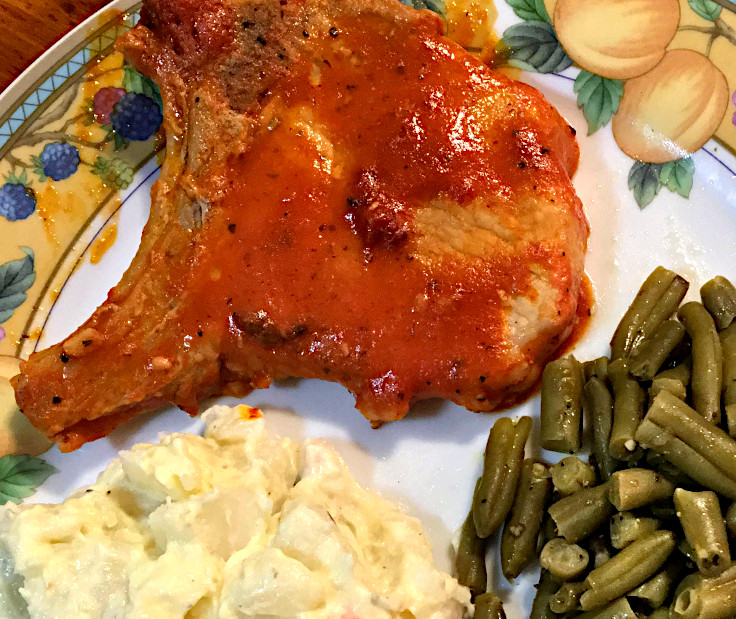

Savory Pork Chops

Ingredients
- 4 Pork Chops
- 1 Cup Tomato Sauce
- 2 Teaspoons Worcestershire Sauce
- 2 Tablespoons Red Wine Vinegar
- 1 Tablespoon & 1 Teaspoon Ranch Salad Dressing
- 1 Clove Garlic
- 1 Dash Pepper
- 1 Dash Dried Oregano
- 1 Dash Dried Cilantro
- 12 Oz Canned Green Beans
- 1 lb Deli Potato Salad
Steps:
- Mix together tomato sauce, Worcestershire sauce, red wine vinegar, Ranch salad dressing, garlic, pepper, oregano and cilantro.
- Place pork chops in a shallow pan with a lid. Pour sauce over top.
- Heat to boiling, then cover and reduce to lowest temperature.
- Simmer for 30 minutes.
- Uncover and turn burner up to medium.
- Place green beans in a saucepan and heat on medium.
- Serve with deli potato salad.